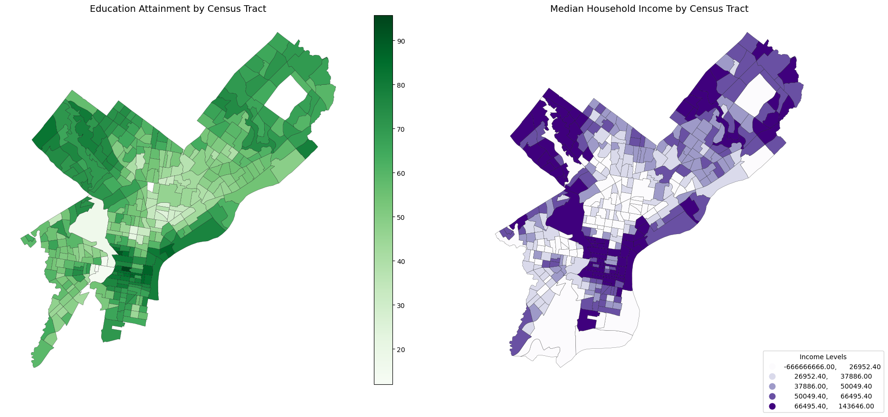

from census import Census
import pandas as pd
import os
import cenpy
import altair as alt
import geopandas as gpd
import hvplot.pandas
import numpy as np
import seaborn as sns
import pygris
from matplotlib import pyplot as pltData Preparation
1.1. Environment Setup
1.2. Load Spatial Data
Note
A GeoJSON holding for Philadelphia census tract boundary is available in the /data directory.
tract = gpd.read_file("./data/Census_Tracts_2010.geojson")
tract.head()| OBJECTID | STATEFP10 | COUNTYFP10 | TRACTCE10 | GEOID10 | NAME10 | NAMELSAD10 | MTFCC10 | FUNCSTAT10 | ALAND10 | AWATER10 | INTPTLAT10 | INTPTLON10 | LOGRECNO | geometry | |
|---|---|---|---|---|---|---|---|---|---|---|---|---|---|---|---|
| 0 | 1 | 42 | 101 | 009400 | 42101009400 | 94 | Census Tract 94 | G5020 | S | 366717 | 0 | +39.9632709 | -075.2322437 | 10429 | POLYGON ((-75.22927 39.96054, -75.22865 39.960... |
| 1 | 2 | 42 | 101 | 009500 | 42101009500 | 95 | Census Tract 95 | G5020 | S | 319070 | 0 | +39.9658709 | -075.2379140 | 10430 | POLYGON ((-75.23536 39.96852, -75.23545 39.969... |
| 2 | 3 | 42 | 101 | 009600 | 42101009600 | 96 | Census Tract 96 | G5020 | S | 405273 | 0 | +39.9655396 | -075.2435075 | 10431 | POLYGON ((-75.24343 39.96230, -75.24339 39.962... |
| 3 | 4 | 42 | 101 | 013800 | 42101013800 | 138 | Census Tract 138 | G5020 | S | 341256 | 0 | +39.9764504 | -075.1771771 | 10468 | POLYGON ((-75.17341 39.97779, -75.17386 39.977... |
| 4 | 5 | 42 | 101 | 013900 | 42101013900 | 139 | Census Tract 139 | G5020 | S | 562934 | 0 | +39.9750563 | -075.1711846 | 10469 | POLYGON ((-75.17313 39.97776, -75.17321 39.977... |
Code for Visualization
fig, ax = plt.subplots(figsize=(8, 8))
ax =tract.to_crs(epsg=3857).plot(ax=ax, facecolor="none", edgecolor="black")
ax.set_axis_off()
ax.set_aspect("equal")1.3. Child Blood Lead Level
lead = gpd.read_file("./data/child_blood_lead_levels_by_ct.geojson")
tract = tract.to_crs(epsg=3857) # Ensure 'tract' is in projected CRS
lead = lead.to_crs(epsg=3857)
# Spatial join between ceansus tracts and lead data
joined = gpd.sjoin(tract, lead, how="left", predicate="intersects")
# Replace 'NAMELSAD10' and 'perc_5plus' with the appropriate column names
lead_aggregated = joined.groupby(["NAMELSAD10", "GEOID10"]).agg({
"perc_5plus": "mean", # Example: Average value from lead
"geometry": "first" # Keep one geometry per tract
}).reset_index()
display(lead_aggregated.head())
lead_aggregated = gpd.GeoDataFrame(lead_aggregated, geometry="geometry", crs="EPSG:3857")| NAMELSAD10 | GEOID10 | perc_5plus | geometry | |
|---|---|---|---|---|
| 0 | Census Tract 1 | 42101000100 | 0.000000 | POLYGON ((-8364710.415 4858926.985, -8364708.8... |
| 1 | Census Tract 10.01 | 42101001001 | 0.000000 | POLYGON ((-8366008.694 4858067.328, -8366013.2... |
| 2 | Census Tract 10.02 | 42101001002 | 0.000000 | POLYGON ((-8365697.832 4857770.055, -8365707.4... |
| 3 | Census Tract 100 | 42101010000 | 6.180000 | POLYGON ((-8376459.164 4861101.785, -8376441.0... |
| 4 | Census Tract 101 | 42101010100 | 5.333333 | POLYGON ((-8375582.343 4861569.516, -8375572.4... |
Code for Visualization
# Replace NaN values with -1 for visualization
lead_aggregated["perc_5plus"] = lead_aggregated["perc_5plus"].fillna(-1)
# Create the plot
fig, ax = plt.subplots(figsize=(10, 10))
lead_aggregated.plot(
ax=ax,
column="perc_5plus", # Use the column with lead level data
cmap="viridis", # Colormap for numerical data
edgecolor="white", # Boundary color
legend=True, # Add legend
legend_kwds={
"label": "Lead Level Percentage\n(-1 = No Data)",
"orientation": "vertical",
},
)
# Format the plot
# ax.set_title("Average Lead Level Percentage by Census Tract", fontsize=16)
ax.set_axis_off()
# Show the plot
plt.show()1.4. Cancer and Asthma
cancer_asthma= gpd.read_file("data/philadelphia_gdf.geojson")
cancer_asthma.head()| countyname | tractfips | casthma_crudeprev | cancer_crudeprev | totalpopulation | geometry | |
|---|---|---|---|---|---|---|
| 0 | Philadelphia | 42101002500 | 11.3 | 5.2 | 3769 | POINT (-8365639.619 4856398.197) |
| 1 | Philadelphia | 42101003702 | 12.8 | 4.8 | 3707 | POINT (-8369269.171 4854982.142) |
| 2 | Philadelphia | 42101031401 | 11.6 | 4.1 | 6664 | POINT (-8356372.430 4872587.322) |
| 3 | Philadelphia | 42101031502 | 11.7 | 6.2 | 4018 | POINT (-8355069.752 4871650.082) |
| 4 | Philadelphia | 42101033200 | 10.4 | 6.7 | 2741 | POINT (-8353959.244 4872306.058) |
cancer_asthma = cancer_asthma.to_crs(epsg=3857)
selected_columns = ["countyname", "tractfips","geometry", "casthma_crudeprev", "cancer_crudeprev", "totalpopulation"]
filtered_gdf = cancer_asthma[selected_columns]
# Filter for rows where CountyName is Philadelphia
philadelphia_gdf = filtered_gdf[filtered_gdf["countyname"].str.contains("Philadelphia", case=False, na=False)]
cancer_asthma_aggregated = gpd.sjoin(lead_aggregated, philadelphia_gdf, how="left", predicate="intersects")# Get the number of rows
num_rows = cancer_asthma_aggregated.shape[0]
cancer_asthma_aggregated["casthma_crudeprev"] = pd.to_numeric(cancer_asthma_aggregated["casthma_crudeprev"], errors="coerce")
cancer_asthma_aggregated["cancer_crudeprev"] = pd.to_numeric(cancer_asthma_aggregated["cancer_crudeprev"], errors="coerce")
# Get the range of 'casthma_crudeprev'
asthma_min = cancer_asthma_aggregated["casthma_crudeprev"].min()
asthma_max = cancer_asthma_aggregated["casthma_crudeprev"].max()
# Get the range of 'cancer_crudeprev'
cancer_min = cancer_asthma_aggregated["cancer_crudeprev"].min()
cancer_max = cancer_asthma_aggregated["cancer_crudeprev"].max()
cancer_asthma_aggregated = cancer_asthma_aggregated.groupby(["NAMELSAD10", "GEOID10"]).agg({
"perc_5plus": "mean", # Average percentage of lead exposure
"casthma_crudeprev": "mean", # Average asthma crude prevalence
"cancer_crudeprev": "mean", # Average cancer crude prevalence
"geometry": "first" # Retain the first geometry
}).reset_index()
cancer_asthma_aggregated.head()| NAMELSAD10 | GEOID10 | perc_5plus | casthma_crudeprev | cancer_crudeprev | geometry | |
|---|---|---|---|---|---|---|
| 0 | Census Tract 1 | 42101000100 | 0.000000 | 9.2 | 3.4 | POLYGON ((-8364710.415 4858926.985, -8364708.8... |
| 1 | Census Tract 10.01 | 42101001001 | 0.000000 | 8.9 | 8.4 | POLYGON ((-8366008.694 4858067.328, -8366013.2... |
| 2 | Census Tract 10.02 | 42101001002 | 0.000000 | 9.0 | 7.2 | POLYGON ((-8365697.832 4857770.055, -8365707.4... |
| 3 | Census Tract 100 | 42101010000 | 6.180000 | 13.5 | 4.6 | POLYGON ((-8376459.164 4861101.785, -8376441.0... |
| 4 | Census Tract 101 | 42101010100 | 5.333333 | 13.6 | 5.5 | POLYGON ((-8375582.343 4861569.516, -8375572.4... |
cancer_asthma_aggregated = gpd.GeoDataFrame(cancer_asthma_aggregated, geometry="geometry", crs="EPSG:3857")
# Fill NaN values with a placeholder (-1) for "No Data"
cancer_asthma_aggregated["cancer_crudeprev_filled"] = cancer_asthma_aggregated["cancer_crudeprev"].fillna(-1)
cancer_asthma_aggregated["casthma_crudeprev"] = cancer_asthma_aggregated["casthma_crudeprev"].fillna(-1)Code for Visualization
fig, axes = plt.subplots(1, 2, figsize=(20, 10))
cancer_asthma_aggregated.plot(
ax=axes[0],
column="cancer_crudeprev",
cmap="Reds",
edgecolor="black",
linewidth=0.2,
legend=True,
legend_kwds={"label": "Cancer Prevalence (-1 = No Data)"},
)
axes[0].set_title("Cancer Prevalence by Census Tract")
axes[0].set_axis_off()
cancer_asthma_aggregated.plot(
ax=axes[1],
column="casthma_crudeprev",
cmap="Blues",
edgecolor="black",
linewidth=0.2,
legend=True,
legend_kwds={"label": "Asthma Prevalence (-1 = No Data)"},
)
axes[1].set_title("Asthma Prevalence by Census Tract")
axes[1].set_axis_off()
plt.tight_layout()
plt.show()1.5. Heat Vulerability
heatindex = gpd.read_file("data/heat_vulnerability_ct.geojson")
heatindex.head()| geoid10 | name10 | n_veryhigh | year | hsi_score | hei_score | hvi_score | objectid | Shape__Area | Shape__Length | geometry | |
|---|---|---|---|---|---|---|---|---|---|---|---|
| 0 | 42101002100 | 21 | 0 | 2023 | 0.502262 | -1.481429 | 0.639224 | 1 | 4.044948e+05 | 2580.858471 | POLYGON ((-75.17370 39.93624, -75.17378 39.935... |
| 1 | 42101002200 | 22 | 0 | 2023 | -3.183298 | -1.658469 | -1.769318 | 2 | 3.894601e+05 | 2518.894793 | POLYGON ((-75.17370 39.93624, -75.17369 39.936... |
| 2 | 42101002300 | 23 | 0 | 2023 | -6.884403 | -1.193579 | -4.362779 | 3 | 3.616223e+05 | 2771.142380 | POLYGON ((-75.16702 39.93675, -75.16696 39.936... |
| 3 | 42101002400 | 24 | 0 | 2023 | -7.107618 | -1.382308 | -4.462616 | 4 | 9.117703e+05 | 4810.554362 | POLYGON ((-75.16629 39.94004, -75.16623 39.940... |
| 4 | 42101034803 | 348.03 | 0 | 2023 | -7.830042 | -0.358619 | -5.684468 | 5 | 2.186876e+06 | 6444.130598 | POLYGON ((-75.00888 40.05866, -75.00915 40.059... |
heatindex = heatindex.to_crs(epsg=3857)
# Perform the spatial join
joined_with_heatindex = gpd.sjoin(cancer_asthma_aggregated, heatindex, how="left", predicate="intersects")
aggregated_heat = joined_with_heatindex.groupby(["NAMELSAD10", "GEOID10"]).agg({
"perc_5plus": "mean", # Average percentage of lead exposure
"casthma_crudeprev": "mean", # Average asthma crude prevalence
"cancer_crudeprev": "mean", # Average cancer crude prevalence
"hvi_score": "mean", # Average of heat index data
"geometry": "first" # Retain the first geometry
}).reset_index()
aggregated_heat = gpd.GeoDataFrame(aggregated_heat, geometry="geometry", crs="EPSG:3857")
# Handle missing data
aggregated_heat["hvi_score"] = aggregated_heat["hvi_score"].fillna(-1) # Replace NaN with -1 for "No Data"Code for Visualization
# Create the plot
fig, ax = plt.subplots(figsize=(10, 10))
aggregated_heat.plot(
ax=ax,
column="hvi_score", # Replace with the HVI column name
cmap="YlOrRd", # Colormap for heat index visualization
edgecolor="white",
linewidth = 0.5,
legend=True, # Add a legend
legend_kwds={
"label": "Heat Vulnerability Index (HVI) Score (-1 = No Data)",
"orientation": "vertical",
},
)
# Remove axis
ax.set_axis_off()
# Show the plot
plt.show()1.6. Tree Canpoy
tree_canopy = gpd.read_file("data/ppr_tree_canopy_outlines_2015.geojson")
# Ensure CRS alignment
tree_canopy = tree_canopy.to_crs("EPSG:3857")
aggregated_heat = aggregated_heat.to_crs("EPSG:3857")
# Perform spatial intersection
intersected = gpd.overlay(tree_canopy, aggregated_heat, how="intersection")
# Calculate tree canopy area (in square meters)
intersected["canopy_area"] = intersected.geometry.area
aggregated_with_canopy = intersected.groupby(["NAMELSAD10", "GEOID10"]).agg({
"perc_5plus": "mean", # Average percentage of lead exposure
"casthma_crudeprev": "mean", # Average asthma crude prevalence
"cancer_crudeprev": "mean", # Average cancer crude prevalence
"hvi_score": "mean", # Average of heat index data
"canopy_area": "sum", # Total canopy area within each tract
"geometry": "first" # Retain the first geometry
}).reset_index()
# Merge the aggregated results back with the original GeoDataFrame
aggregated_with_canopy_full = aggregated_heat.merge(
aggregated_with_canopy,
on="NAMELSAD10",
how="left",
suffixes=("", "_aggregated")
)
# Rename columns
aggregated_with_canopy_full = aggregated_with_canopy_full.rename(
columns={
"GEOID10": "GEOID" # Rename GEOID to match Census
}
)
# Fill missing values for 'canopy_area' and 'canopy_percent' with 0
aggregated_with_canopy_full["canopy_area"] = aggregated_with_canopy_full["canopy_area"].fillna(0)
aggregated_with_canopy_full["canopy_percent"] = aggregated_with_canopy_full["canopy_area"] / aggregated_with_canopy_full.geometry.area * 100
aggregated_with_canopy_full.head()| NAMELSAD10 | GEOID | perc_5plus | casthma_crudeprev | cancer_crudeprev | hvi_score | geometry | GEOID10_aggregated | perc_5plus_aggregated | casthma_crudeprev_aggregated | cancer_crudeprev_aggregated | hvi_score_aggregated | canopy_area | geometry_aggregated | canopy_percent | |
|---|---|---|---|---|---|---|---|---|---|---|---|---|---|---|---|
| 0 | Census Tract 1 | 42101000100 | 0.000000 | 9.2 | 3.4 | -4.917169 | POLYGON ((-8364710.415 4858926.985, -8364708.8... | 42101000100 | 0.000000 | 9.2 | 3.4 | -4.917169 | 15295.431073 | POLYGON ((-8365601.290 4859085.382, -8365600.7... | 1.272227 |
| 1 | Census Tract 10.01 | 42101001001 | 0.000000 | 8.9 | 8.4 | -6.734700 | POLYGON ((-8366008.694 4858067.328, -8366013.2... | 42101001001 | 0.000000 | 8.9 | 8.4 | -6.734700 | 18685.893835 | POLYGON ((-8365867.678 4857764.287, -8365867.3... | 4.781632 |
| 2 | Census Tract 10.02 | 42101001002 | 0.000000 | 9.0 | 7.2 | -6.821269 | POLYGON ((-8365697.832 4857770.055, -8365707.4... | 42101001002 | 0.000000 | 9.0 | 7.2 | -6.821269 | 35866.481410 | POLYGON ((-8365243.510 4858160.829, -8365243.0... | 4.464418 |
| 3 | Census Tract 100 | 42101010000 | 6.180000 | 13.5 | 4.6 | 2.479992 | POLYGON ((-8376459.164 4861101.785, -8376441.0... | 42101010000 | 6.180000 | 13.5 | 4.6 | 2.479992 | 18194.466411 | POLYGON ((-8377098.367 4862164.604, -8377097.8... | 2.147186 |
| 4 | Census Tract 101 | 42101010100 | 5.333333 | 13.6 | 5.5 | 3.499149 | POLYGON ((-8375582.343 4861569.516, -8375572.4... | 42101010100 | 5.333333 | 13.6 | 5.5 | 3.499149 | 30726.883686 | POLYGON ((-8376335.161 4861584.880, -8376334.7... | 2.996808 |
Code for Visualization
# Plot Tree Canopy (unedited and quantile)
fig, axes = plt.subplots(1, 2, figsize=(20, 10))
# Plot 1: Tree Canopy
aggregated_with_canopy_full.plot(
ax=axes[0],
column="canopy_percent",
cmap="Greens",
edgecolor="black",
linewidth=0.2,
legend=True,
)
axes[0].set_title("Tree Canopy by Census Tract", fontsize=14)
axes[0].set_axis_off()
# Plot 2: Tree Canopy (Quantile)
aggregated_with_canopy_full.plot(
ax=axes[1],
column="canopy_percent",
cmap="Greens",
scheme="quantiles",
k=5,
edgecolor="black",
linewidth=0.2,
legend=True,
)
axes[1].set_title("Tree Canopy by Census Tract (Quantile)", fontsize=14)
axes[1].set_axis_off()
# Customize legend for Median Household Income
income_legend = axes[1].get_legend()
income_legend.set_bbox_to_anchor((1.2, 0.1)) # Adjust position to bottom-right
income_legend.set_title("Percentage Coverage")
# Adjust layout
plt.tight_layout(rect=[0, 0.03, 1, 0.92])
plt.show()1.7. Census Data
available = cenpy.explorer.available()
# Return a dataframe for 5 year ACS
# Axis=0 means to filter the index labels!
acs = available.filter(regex="^ACSDT5Y", axis=0)
# Choosing only 2019 ACS 5-Year
## 2019 chosen over 2021 because of the number of census tracts
acs = cenpy.remote.APIConnection("ACSDT5Y2019")For the purpose of this project, we are interested in finding the following:
Average Median Income
Percentage Non-White Population
Population with High School Dipolma or Higher (Age 25+)
Percent Dependent Population (Age 0-15 and 65 and older)
# Variables from Census
variables = [
"NAME",
"B03002_001E", # Total population
"B03002_003E", # Not Hispanic, White
"B19013_001E", # Median household income
"B15003_017E", # High School diploma
"B15003_018E", # GED or alternative
"B15003_019E", # Some college
"B15003_020E", # Some college, more than 1 year
"B15003_021E", # Associate's Degree
"B15003_022E", # Bachelor's degree
"B15003_023E", # Master's degree
"B15003_024E", # Professional School
"B15003_025E", # Doctorate degree
"B01001_003E", # Male Population under 5
"B01001_004E", # Male Population 5-9
"B01001_005E", # Male Population 10-14
"B01001_020E", # Male Population 65-66
"B01001_021E", # Male Population 67-69
"B01001_022E", # Male Population 70-74
"B01001_023E", # Male Population 75-79
"B01001_024E", # Male Population 80-84
"B01001_025E", # Male Population 85 and older
"B01001_027E", # Female Population under 5
"B01001_028E", # Female Population 5-9
"B01001_029E", # Female Population 10-14
"B01001_044E", # Female Population 65-66
"B01001_045E", # Female Population 67-69
"B01001_046E", # Female Population 70-74
"B01001_047E", # Female Population 75-79
"B01001_048E", # Female Population 80-84
"B01001_049E" # Female Population 85 and older
]# Define codes for Philly
philly_county_code = "101"
pa_state_code = "42"
# Adjust the geo_unit to query census tracts
philly_census_data = acs.query(
cols=variables,
geo_unit="tract:*",
geo_filter={"state": pa_state_code, "county": philly_county_code}
)# Check the data types for each column
# print(philly_census_data.dtypes)
# Convert the data types to numeric
numeric_columns = [
"B03002_001E", "B03002_003E", "B19013_001E",
"B15003_017E", "B15003_018E", "B15003_019E",
"B15003_020E", "B15003_021E", "B15003_022E",
"B15003_023E", "B15003_024E", "B15003_025E",
"B01001_003E", "B01001_004E", "B01001_005E",
"B01001_020E", "B01001_021E", "B01001_022E",
"B01001_023E", "B01001_024E", "B01001_025E",
"B01001_027E", "B01001_028E", "B01001_029E",
"B01001_044E", "B01001_045E", "B01001_046E",
"B01001_047E", "B01001_048E", "B01001_049E"
]
philly_census_data[numeric_columns] = philly_census_data[numeric_columns].apply(pd.to_numeric, errors="coerce")
# Handle missing values
philly_census_data[numeric_columns] = philly_census_data[numeric_columns].fillna(0)# Combining Columns to aggregate population data
philly_census_data["Pop_15_and_Younger"] = (
philly_census_data["B01001_003E"] + # Male under 5
philly_census_data["B01001_004E"] + # Male 5-9
philly_census_data["B01001_005E"] + # Male 10-14
philly_census_data["B01001_027E"] + # Female under 5
philly_census_data["B01001_028E"] + # Female 5-9
philly_census_data["B01001_029E"] # Female 10-14
)
philly_census_data["Pop_65_and_Older"] = (
philly_census_data["B01001_020E"] + # Male 65-66
philly_census_data["B01001_021E"] + # Male 67-69
philly_census_data["B01001_022E"] + # Male 70-74
philly_census_data["B01001_023E"] + # Male 75-79
philly_census_data["B01001_024E"] + # Male 80-84
philly_census_data["B01001_025E"] + # Male 85 and older
philly_census_data["B01001_044E"] + # Female 65-66
philly_census_data["B01001_045E"] + # Female 67-69
philly_census_data["B01001_046E"] + # Female 70-74
philly_census_data["B01001_047E"] + # Female 75-79
philly_census_data["B01001_048E"] + # Female 80-84
philly_census_data["B01001_049E"] # Female 85 and older
)
# Creating Dependent Population Column
philly_census_data["Dependent_Pop"] = (
philly_census_data["Pop_15_and_Younger"] +
philly_census_data["Pop_65_and_Older"]
)
# Creating Percentage dependent population column
philly_census_data["Perc_Dependent_Pop"] = (
(philly_census_data["Dependent_Pop"] / philly_census_data["B03002_001E"]) * 100
).round(2)# Combining Columns to aggregate education data
# Education attainment that is at least high school or more
philly_census_data["Edu_HS_Higher"] = (
philly_census_data["B15003_017E"] + # High School diploma
philly_census_data["B15003_018E"] + # GED or alternative
philly_census_data["B15003_019E"] + # Some college
philly_census_data["B15003_020E"] + # Some college, more than 1 year
philly_census_data["B15003_021E"] + # Associate's Degree
philly_census_data["B15003_022E"] + # Bachelor's degree
philly_census_data["B15003_023E"] + # Master's degree
philly_census_data["B15003_024E"] + # Professional School
philly_census_data["B15003_025E"] # Doctorate degree
)
# Creating Percentage HS attainment or higher column
philly_census_data["Perc_Edu_HS_Higher"] = (
(philly_census_data["Edu_HS_Higher"] / philly_census_data["B03002_001E"]) * 100
).round(2)# Creating Non-White Population Column
philly_census_data["Non_White"] = (
philly_census_data["B03002_001E"] - philly_census_data["B03002_003E"]
)
# Creating Percentage Non-White Population column
philly_census_data["Perc_Non_White"] = (
(philly_census_data["Non_White"] / philly_census_data["B03002_001E"]) * 100
).round(2)# Rename columns
philly_census_data = philly_census_data.rename(
columns={
"B03002_001E": "Total_Pop", # Total Population
"B03002_003E": "White_Only", # Not Hispanic, White
"B19013_001E": "Median_Household_Income"
}
)
# Drop columns that are redundant
philly_census_data = philly_census_data.drop(columns = [
"B15003_017E", "B15003_018E", "B15003_019E",
"B15003_020E", "B15003_021E", "B15003_022E",
"B15003_023E", "B15003_024E", "B15003_025E",
"B01001_003E", "B01001_004E", "B01001_005E",
"B01001_020E", "B01001_021E", "B01001_022E",
"B01001_023E", "B01001_024E", "B01001_025E",
"B01001_027E", "B01001_028E", "B01001_029E",
"B01001_044E", "B01001_045E", "B01001_046E",
"B01001_047E", "B01001_048E", "B01001_049E"]) # Fetch the census tracts for Philadelphia
philly_census_tracts = pygris.tracts(
state=pa_state_code,
county=philly_county_code,
year=2019
)# Merge demographic data with geometries
census_data = philly_census_tracts.merge(
philly_census_data,
left_on=["STATEFP", "COUNTYFP", "TRACTCE"],
right_on=["state", "county", "tract"],
)census_data.explore(column="Total_Pop", tiles="CartoDB positron")Make this Notebook Trusted to load map: File -> Trust Notebook
Code for Visualization
# Plot Population and Non-white Population
fig, axes = plt.subplots(1, 2, figsize=(20, 10))
# Plot 1: Total Population
census_data.plot(
ax=axes[0],
column="Total_Pop",
cmap="Blues",
edgecolor="black",
linewidth=0.2,
legend=True,
)
axes[0].set_title("Total Population by Census Tract", fontsize = 14)
axes[0].set_axis_off()
# Plot 2: Percentage Non-White
census_data.plot(
ax=axes[1],
column="Perc_Non_White",
cmap="Reds",
edgecolor="black",
linewidth=0.2,
legend=True,
)
axes[1].set_title("Percentage Non-Whites by Census Tract", fontsize = 14)
axes[1].set_axis_off()
plt.tight_layout(rect=[0, 0.03, 1, 0.92])
plt.show()Code for Visualization
# Plot total population by census tract
fig, ax = plt.subplots(1, 1, figsize=(10, 10))
census_data.plot(
column="Perc_Dependent_Pop", # Total population column
cmap="Blues", # Color map
legend=True,
edgecolor="black",
linewidth=0.2,
ax=ax
)
ax.axis("off")
plt.show()
Code for Visualization
# Plot Education Attainment and Median Household Income
fig, axes = plt.subplots(1, 2, figsize=(20, 10))
# Plot 1: Education Attainment
census_data.plot(
ax=axes[0],
column="Perc_Edu_HS_Higher",
cmap="Greens",
edgecolor="black",
linewidth=0.2,
legend=True,
)
axes[0].set_title("Education Attainment by Census Tract", fontsize=14)
axes[0].set_axis_off()
# Plot 2: Median Household Income
census_data.plot(
ax=axes[1],
column="Median_Household_Income",
cmap="Purples",
scheme="quantiles",
k=5,
edgecolor="black",
linewidth=0.2,
legend=True,
)
axes[1].set_title("Median Household Income by Census Tract", fontsize=14)
axes[1].set_axis_off()
# Customize legend for Median Household Income
income_legend = axes[1].get_legend()
income_legend.set_bbox_to_anchor((1.2, 0.1)) # Adjust position to bottom-right
income_legend.set_title("Income Levels")
# Adjust layout
plt.tight_layout(rect=[0, 0.03, 1, 0.92])
plt.show()

Summary
Before diving into extensive data processing, an exploratory analysis was conducted to gain a foundational understanding of the datasets and their spatial and statistical characteristics. This step allowed us to identify patterns, outliers, and preliminary relationships between variables, providing valuable context for more in-depth analyses later.
Spatial Patterns and Trends
Using the cleaned datasets, we created a series of maps to visualize key variables across Philadelphia by census tracts. The visualizations revealed the following:
Child Blood Lead Levels
- Elevated rates of lead exposure were concentrated in areas around North Philadelphia and Kensington.
Asthma and Cancer Prevalence
- Cancer Prevalence: Higher concentrations were found in tracts within northeast and northwest Philadelphia.
- Asthma Prevalence: Higher concentrations were observed in areas around north and west Philadelphia.
Tree Canopy Coverage
- Higher Coverage: Concentrated in northwest, southwest, and parts of northeast Philadelphia.
- Lower Coverage: Sparse canopy coverage was observed in central and northern tracts.
Heat Vulnerability
- Areas with the highest heat vulnerability scores were concentrated around north and west Philadelphia, where tree canopy coverage was minimal.
Non-White Populations
- Census tracts in north, west, and southwest Philadelphia exhibited the highest concentration of non-white populations.
Educational Attainment
- Higher proportions of adults with at least a high school diploma were concentrated in northwest, south Philadelphia, and Center City.
Median Household Income
- Areas around Center City, lower north, and northeast Philadelphia had the highest concentration of high median household incomes by census tract.